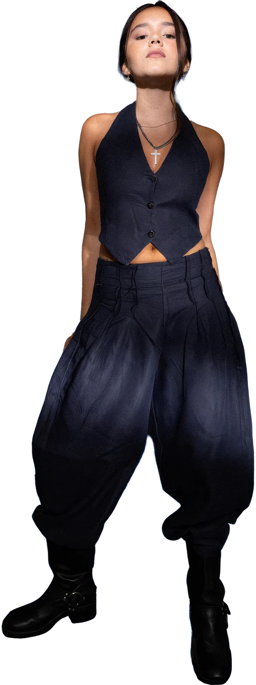
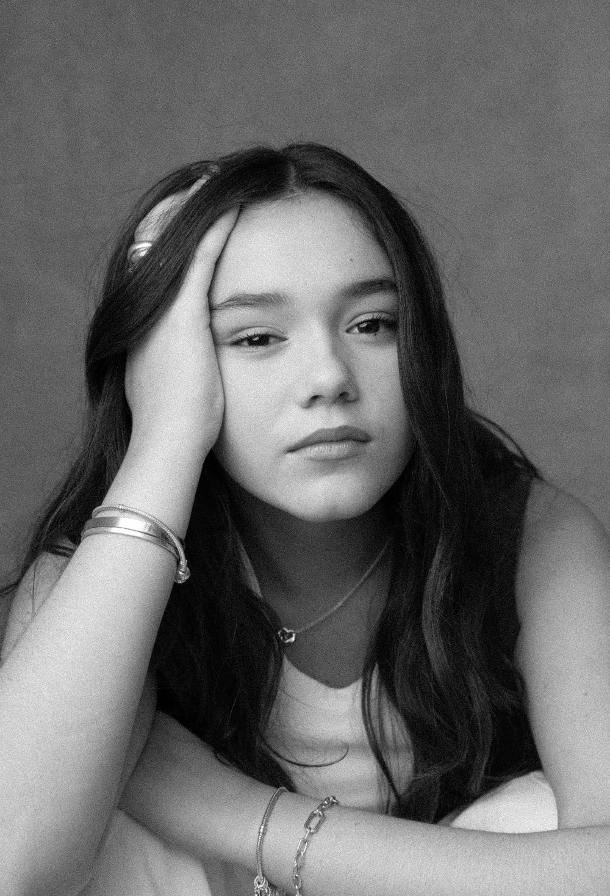
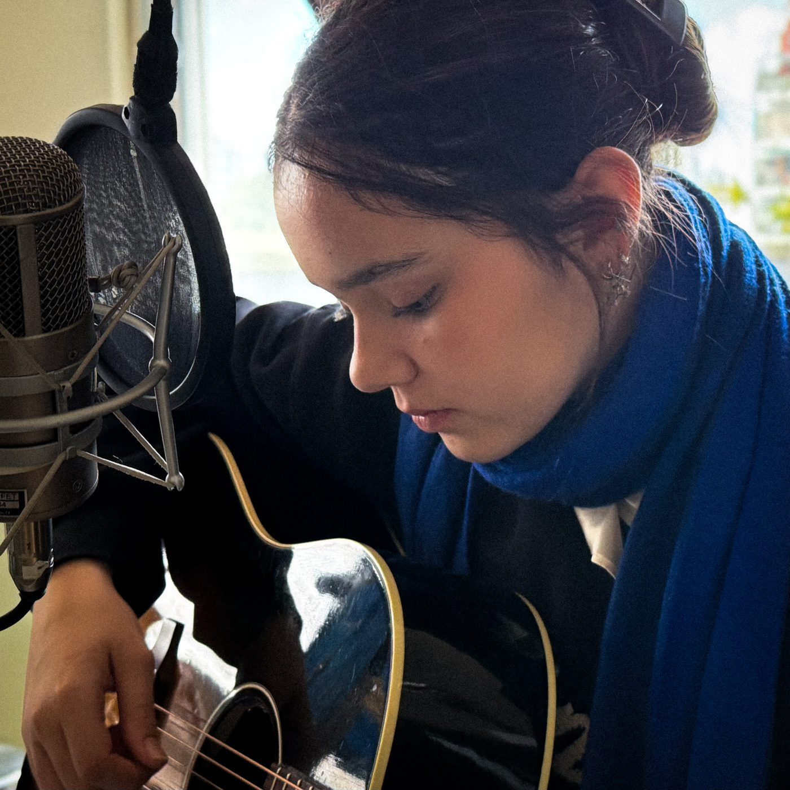

Origamix
Cuatro especiales de Gelatina, con Juana como voz principal.


Compositora — intérprete — actriz

juana

Empezó en 2014, con la danza y la actuación. En 2020 se sumó a Otro Mundo, el camino que la llevó a actuar como Tomika en School of Rock, en el Teatro Gran Rex.
Compone sus propias canciones y es una intérprete muy versátil. Tiene un lenguaje propio en constante evolución.
Empieza su camino artístico a través de la danza y la actuación.
Se suma a Otro Mundo, donde sigue hasta hoy.
Tomika en School of Rock: más de veinte funciones en una temporada, en plena calle Corrientes. Nominada a los Premios Hugo como mejor interpretación femenina en ensamble.
Voz principal de Origamix, con Feli Colina y Eruca Sativa. El proyecto es nominado a los Martín Fierro como mejor programa musical de streaming.
Voz y coros en el álbum de Magdalena Fleitas.


School of Rock: más de 20 funciones en una temporada.
Magdalena Fleitas: voz y coros en el álbum “Risas del Rock”.
Origamix: voz principal femenina.

Juana vive su proyecto musical y artístico alrededor de la palabra: escribe y compone sus canciones, y transforma sus experiencias en preguntas colectivas.
Descubrir el mundo
es hacer preguntas.

Cuatro especiales de Gelatina, con Juana como voz principal.

Clips juntas y una canción en El Tazzo.
Ver en Instagram
Cuatro episodios de tres minutos.
Palabras — preguntas — canciones
Las letras en el cuaderno, la producción con Ana Prada y el estudio con Matías Cella.
Ver el procesoSe entra con el código de la postal.